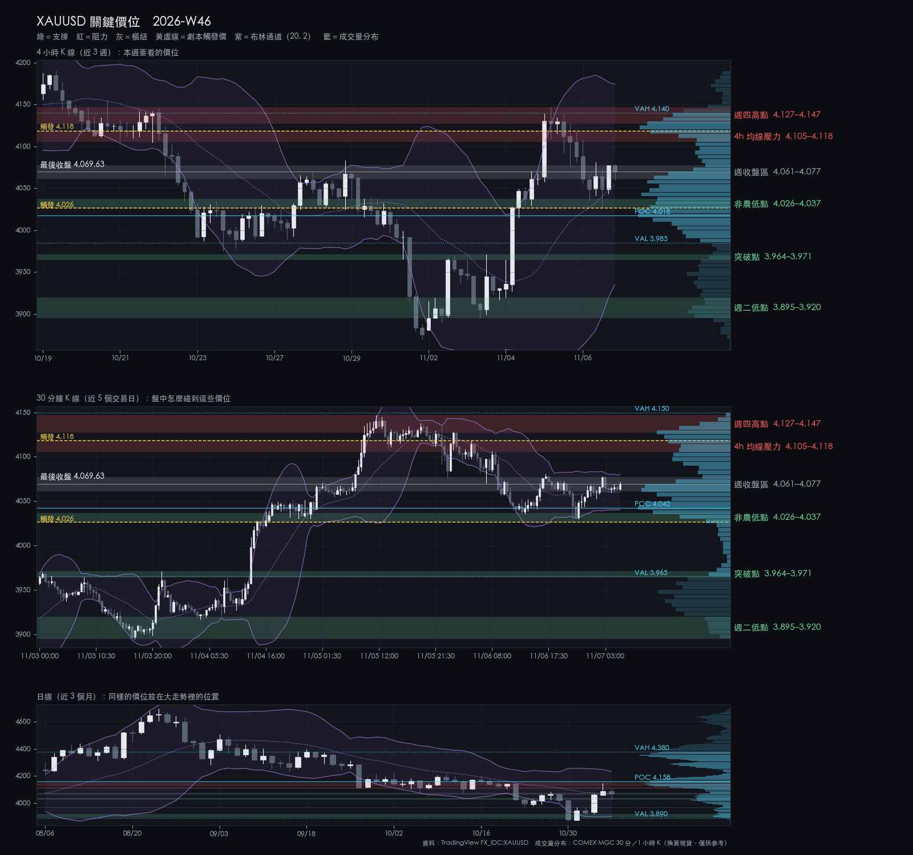
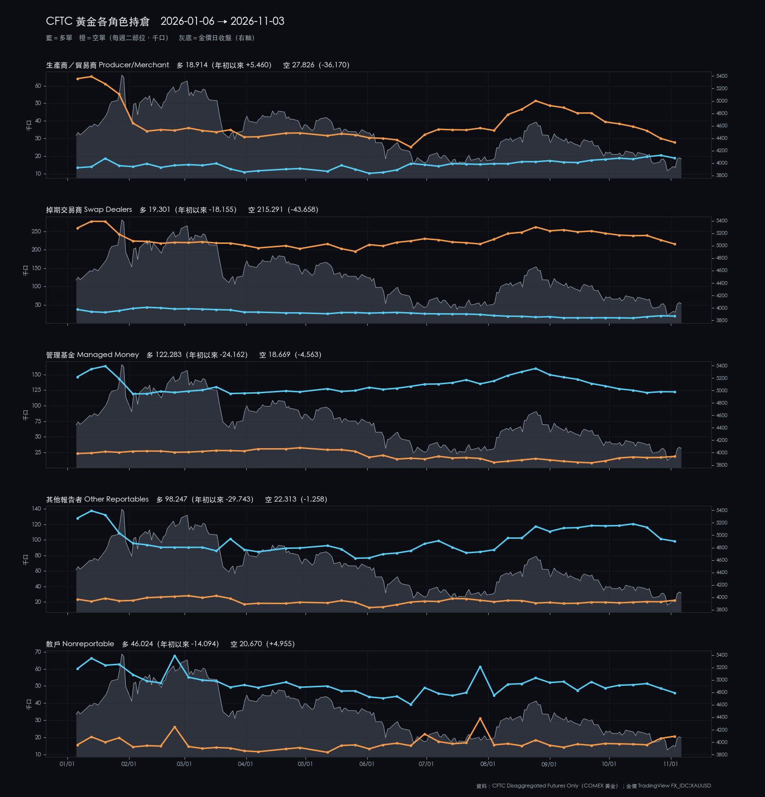

2026-W46 · Sun · 信心 medium 單一來源
XAUUSD 2026-W46 週報
影片 Video
在 YouTube 觀看：2026W46｜上週金價漲 5%！本週（11/9–11/13）盯 CPI 與 2 個價位｜黃金筆記 ↗
一分鐘重點（Shorts）：
選後反彈：週二低 3895、週四高 4147，非農強勁後回落，週收 4070（+5.0%），重回跌破的年內底部之上。
本週建議 觀望：CPI 前不追；4026–4037 等 S2 錘頭
資料截止：2026-11-06T21:30:00+00:00
關鍵價位

| 4,127.05–4,146.99 | 阻力 | 週四高點 | 到這裡不追多，看 4h 能否收上 |
|---|---|---|---|
| 4,105.17–4,118.01 | 阻力 | 4h 均線壓力 | 4h 收上 4118 才看上攻 |
| 4,061.18–4,077.36 | 樞紐 | 週收盤區 | 守住偏整理；跌破看 4026–4037 |
| 4,026.04–4,036.95 | 支撐 | 非農低點 | S2 候選區；4h 收破轉回落 |
| 3,964.30–3,971.23 | 支撐 | 突破點 | 回落第一目標，看錘頭 |
| 3,894.70–3,919.63 | 支撐 | 週二低點 | 跌到這裡代表反彈失敗 |
劇本
| 整理 | 50% | 在 4026–4118 之間整理，等週二 CPI | — |
|---|---|---|---|
| 偏多 | 20% | 4h 收上 4118 才看 4127–4147 | 4,118.01 |
| 偏空 | 30% | 4h 收破 4026 看 3964–3971 | 4,026.04 |
本週看什麼
- 4105–4118（4h EMA200）能否 4h 收上
- 4026–4037 非農低點守不守得住
- 週二 21:30 CPI；20:30 後不新進場
S1／S2
| S1 V3.9 | wait | C 級：上軌 4080 上方 25 點就進入 4105–4118 壓力帶 |
|---|---|---|
| S2 V3.2 | wait | B 級：4026–4037 出現正式錘頭再考慮 |
事件
| 2026-11-10 17:00 | Fed 理事 Waller 演說（經濟展望） | Fed 官方行事曆（美東 4:00 a.m.，倫敦）。演說前後 30 分鐘不新進場（報告作者建議）。 |
|---|---|---|
| 2026-11-10 21:30 | 美國 10 月 CPI | BLS 排程。交易規則：公布前評估平倉；20:30 後不新進場。 |
| 2026-11-11 04:30 | Fed 副主席（監理）Bowman 兩場演說（經濟展望） | Fed 官方行事曆，台北 04:30 與 07:30；CPI 隔夜，持倉留意。 |
| 2026-11-11 00:00 | 美國退伍軍人節 | BLS 與 Fed 當天沒有發布；美國市場流動性可能較低（判斷）。 |
| 2026-11-12 23:00 | Fed 理事 Barr 座談（AI 與不平等） | Fed 官方行事曆；主題非貨幣政策。 |
| 2026-11-13 21:30 | 美國 10 月 PPI | BLS 排程。20:30 後不新進場；週六 04:00 前全部平倉。 |
| 2026-11-14 08:00 | Fed 副主席 Jefferson 演說 | Fed 官方行事曆；在週六 04:00 全平之後。本週另有 Bowman 11/9、11/13 監理主題談話；無 FOMC、無作證。 |
上週回顧
- 週一 4h 收上 3924，上週反彈劇本觸發
- 週三民主黨拿下國會、油價大跌，金價站回 4,000
- 週四高 4147；週五非農 +16.5 萬，低 4026、收 4070
| 2026-W42 | 4,194.8 | 4,217.19 | 4,073.49 | 4,165.175 | -0.71% |
|---|---|---|---|---|---|
| 2026-W43 | 4,163.6 | 4,190.38 | 3,975.792 | 3,995.38 | -4.04% |
| 2026-W44 | 3,992.6 | 4,083.41 | 3,870.255 | 3,875.19 | -2.94% |
| 2026-W45 | 3,874.3 | 4,146.99 | 3,874.3 | 4,069.99 | +5.05% |
市場消息
情緒 偏避險：科技股與台股重挫、油價大跌，金價反彈
- 民主黨拿下參眾兩院；油價一週跌約 17%，金價週漲約 5%
- Nasdaq 單日 −5.5%、台股一週跌約 8%，AI 股遭拋售
- 非農 +16.5 萬遠超預期；下週二 CPI、週五 PPI
展開看消息整理：上週 7 則、一週變化、近 3 個月、近半年主線
上週消息（2026-10-31～2026-11-06）
| 11-02 | 地緣／油價 | 美國與伊朗都表示願意給外交一個機會，市場開始押注停戰協議。 | Brent 單日跌近 7% | OilPrice.com |
|---|---|---|---|---|
| 11-04 | Fed／總經 | 期中選舉民主黨拿下參眾兩院；川普表示接受結果，市場預期國會分治、舉債放緩。 | 道瓊 +3%、S&P 500 +1.6%；美債殖利率與美元走低，金價重回 4,000 之上 | CBS News、CNN、Kitco |
| 11-04 | 地緣／油價 | 市場押注選後較快達成美伊協議，油價戰爭溢價快速消退；協議本身尚未證實。 | Brent 單日跌逾 8%、跌破 100，一度約 94.6 | OilPrice.com、Coinpaper |
| 11-05 | 美股／AI | AI 與晶片股重挫，市場擔心民主黨國會收緊 AI 規範、放慢資料中心審批。 | Nasdaq −5.5%，19 個月最大單日跌幅；AMD、美光約 −17% | NBC News、Gulf Business |
| 11-05 | 黃金 | 金價選後一路反彈到本週高點約 4,147，之後隨科技股拋售引發的賣壓回落。 | 現貨週高 4,147，週四收約 4,087 | Kitco |
| 11-06 | Fed／總經 | 10 月非農就業增加 16.5 萬，遠高於預期約 6.5 萬；失業率降到 4.1%，12 月升息預期升溫。 | 美元與短天期殖利率走高；金價一度跌到約 4,026，週收約 4,070 | BLS、Babypips、Kitco |
| 11-06 | 台股／台幣 | 台股跟著 AI 股連日重挫，外資連續賣超；11/6 盤中一度跌逾 3,700 點，史上最大盤中跌點。 | 11/5 收 41,574.72（−1,374），到 11/5 四個交易日跌約 8%；投信逆勢買超 | ETtoday、風傳媒、Yahoo 奇摩股市 |
一週變化
| 黃金（COMEX 期貨） | 4,079.50 | +4.63% | 11-06 |
|---|---|---|---|
| S&P 500 | 7,376.86 | -2.68% | 11-06 |
| Nasdaq | 24,579.42 | -3.37% | 11-06 |
| 加權指數 | 41,574.72 | -8.04% | 11-05 |
| Brent 原油 | 97.76 | -16.90% | 11-06 |
| 美 10 年期殖利率 | 4.86 | -7 bp | 11-06 |
| 美元指數 | 102.28 | +0.39% | 11-06 |
| 美元／台幣 | 32.77 | +0.61% | 11-06 |
| VIX | 25.64 | +32.03% | 11-06 |
資料：Yahoo Finance 日收盤（yfinance）
近 3 個月
| 10-22 | 美股／AI | 一批 AI 財報再掀支出疑慮，晶片股領跌；Meta 現金流轉負。 |
|---|---|---|
| 10-22 | 黃金 | 美債殖利率下跌，金價仍單日跌逾 2%；分析認為是科技股大跌時的保證金賣壓。 |
| 10-23 | 地緣／油價 | 沙烏地遭攻擊、中東供應風險升高，Brent 一度約 114，5 月以來最高。 |
| 10-28 | Fed／總經 | FOMC 以 10 比 2 維持 3.75–4.00%；Cook、Hammack 主張升息 1 碼。 |
| 10-29 | Fed／總經 | 9 月 PCE 年增 3.6%、核心 3.1%；第三季 GDP 優於預期。 |
| 10-29 | 美股／AI | Alphabet 財報不如預期、自由現金流轉負，股價跌約 12%；微軟雲端成長獲買盤。 |
| 10-30 | 黃金 | 金價跌破 3,900，2026 年新低，距 1 月高點約 −30%；白銀同日跌約 6%。 |
| 10-30 | 台股／台幣 | 台股跌破半年線；外資 10 月賣超近 9,943 億元，單月紀錄。 |
近半年主線
| 伊朗衝突與油價 | 2026-02-28 | 美伊釋出外交訊號、選後押注協議，Brent 一週跌約 17%、跌破 100；協議尚未證實。 |
|---|---|---|
| Fed 重回升息與高殖利率 | 2026-06-17 | 民主黨拿下國會；10 月非農 +16.5 萬遠超預期，12 月升息預期升溫，下週二 CPI。 |
| AI 支出與回收疑慮 | 2026-06-05 | 選後擔心 AI 規範與資料中心審批，Nasdaq 單日 −5.5%、週跌約 3.4%。 |
| 黃金從 1 月高點回落 | 2026-01-29 | 選後反彈、週漲約 5%，週高 4,147；非農後回落，週收約 4,070，距 1 月高點約 −27%。 |
| 外資賣台股、台幣走貶 | 2026-10-06 | 外資連日大幅賣超、台股到 11/5 跌約 8%，11/6 盤中史上最大跌點；台幣週貶到約 32.8。 |
消息只是背景，不是進出場依據；「未確認」表示只找到評論或二手來源。
CFTC
11/3 大戶淨多 10.4 萬（−1,948），散戶連兩週減多加空；部位在選後大漲之前（判斷：不代表本週反彈）。
持倉反映的是建立它的那一週，不能預測下一週；看研究結論 →

CFTC 原始截圖（2026-11-03）

展開看策略績效：S1／S2 回測（資料到 2026-10-09）
| S1 V3.9 | 346 | 53.47% | +61.04% | 1.75 | 4.67% | 3.05 | +22.46%（黃金 -2.87%） |
|---|---|---|---|---|---|---|---|
| S2 V3.2 | 130 | 41.54% | +51.54% | 1.67 | 12.79% | 1.79 | +1.21%（黃金 -2.87%） |
| S1 V3.9 | +0.0% | -0.1% | -1.57% |
|---|---|---|---|
| S2 V3.2 | +2.0% | -5.0% | -1.0% |
| 黃金 | +10.06% | -6.45% | +0.8% |
TradingView 回測匯出（固定部位、不複利）；只在重新匯出時更新，不是訊號。 距上次匯出 29 天。完整績效頁 →
展開看細節：價位依據、劇本完整條件、市場摘要、證據限制
市場摘要
W45 收 4069.99，週開 3874.3，對 W44 週收 +5.03%，收在週區間 71.8% 處。週二最低 3895.55；週三期中選舉結果出爐、油價大跌，金價站回 4,000；週四高 4146.99，有三根 4h 收在 4118 之上後跌回；週五非農 +16.5 萬後最低 4027.04、收 4069.99。價格在 4h EMA50 4033.28 之上、4h EMA200 4114.90 之下，日收在 1d 布林中軌 4066.62 旁；各週期 RSI 回到 43–56。DXY 週收 102.279（+0.31%）。
價位依據
| 週四高點 | 4127.05–4146.99 | 實際成交價：11/5 11:00 那根 4h 高 4146.99（本週最高）、收 4127.05；07:00 那根高 4139.42、收 4130.17；15:00 那根收 4129.81。 帶寬 19.94 點，約 0.51 根 4h ATR（39.44，最近 14 根 4h 真實區間平均）。三根 4h 收盤 4127.05–4130.17 都在帶內下緣，表示週四在這裡停了 12 小時沒能再上；計算值 1d EMA50 4154.30 在帶上方 7.31 點（以 ATR 衡量帶寬是執行者選定的描述方式，未經核准，下同）。 |
|---|---|---|
| 4h 均線壓力 | 4105.17–4118.01 | 實際成交價：11/5 23:00 那根 4h 收 4105.17、11/6 03:00 那根高 4118.01。計算值：4h EMA200 4114.90（最後一根 4h 的值，最近 200 根 4h 收盤的指數移動平均）落在帶內。 帶寬 12.84 點，約 0.33 根 4h ATR。週四 07:00、11:00、15:00 三根 4h 收在 4127.05–4130.17，在當時的 4h EMA200（約 4118.5–4118.7，以 TradingView 4h 收盤重算）之上；19:00 那根收 4112.24 跌回之下。週五 03:00 那根反彈高 4118.01，碰到當時的 EMA200（約 4118.2）就回落（判斷：這條線本週兩次都沒站穩，是 10 月下旬以來的下降均線）。 |
| 週收盤區 | 4061.18–4077.36 | 實際成交價：11/6 07:00 那根 4h 收 4061.18、23:00 那根收 4077.36、最後一根 11/7 03:00 收 4069.63（週收 4069.99，日線）。計算值：1d 布林中軌 4066.62（最近 20 根日收盤平均）在帶內。 帶寬 16.18 點，約 0.41 根 4h ATR。週五 NFP 前後的 4h 收盤都在帶內或帶旁，週收在中間；1d 布林中軌在帶內（判斷：價格回到日線通道中間，方向未定）。 |
| 非農低點 | 4026.04–4036.95 | 實際成交價：11/6 19:00 那根 4h（含 21:30 非農）低 4026.04、日線低 4027.04、11/4 19:00 那根收 4036.95。計算值：4h EMA50 4033.28（最近 50 根 4h 收盤的指數移動平均）在帶內。 帶寬 10.91 點，約 0.28 根 4h ATR。非農公布後最低到 4026.04，同一根收回 4048.47（收在低點上方 22.43 點）；週三上漲途中 4030–4037 也停過一根 4h（判斷：是本週第一個被測試過守住的支撐）。 |
| 突破點 | 3964.30–3971.23 | 實際成交價：11/2 19:00 那根 4h 收 3964.30、23:00 那根高 3970.34；11/3 19:00 那根高 3971.23。 帶寬 6.93 點，約 0.18 根 4h ATR。週一、週二兩次衝到 3970 附近都被擋，週三才突破；這也是上週跌破的年內底部 3942.71–3969.98 的上緣（判斷：突破點回測常見，守住才算底部收復）。 |
| 週二低點 | 3894.70–3919.63 | 實際成交價：11/3 15:00 那根 4h 低 3894.70（日線低 3895.55）、11/4 03:00 那根低 3916.70、07:00 那根低 3919.63。計算值：1d 布林下軌 3900.32（中軌減兩倍 20 日標準差）在帶內。 帶寬 24.93 點，約 0.63 根 4h ATR。選前最後兩個低點都在帶內，之後才上漲；帶寬比其他帶寬，因為兩個低點差 24.93 點，中間沒有成交密集處可再切開。 |
劇本完整條件
| 整理 | 50% | 價格在非農低點 4026.04–4036.95 與 4h 均線壓力 4105.17–4118.01 之間往復，沒有 4h 收盤站上 4118.01，也沒有 4h 收盤跌破 4026.04。 | 4h 收盤站上 4118.01，或 4h 收盤跌破 4026.04。 | 區間內往復：上看 4105.17–4118.01 的反應，下看 4061.18–4077.36 與 4026.04–4036.95。 |
|---|---|---|---|---|
| 偏多 | 20% | 4h 收盤站上 4118.01（4h EMA200 所在的壓力帶上緣），回踩不破 4105.17（帶下緣）。 | 站上後 4h 收盤跌回 4105.17 之下。 | 第一目標 4127.05–4146.99（週四高點）；其上 4h 布林上軌 4173.95（計算值，會隨價格移動）。 |
| 偏空 | 30% | 4h 收盤跌破 4026.04（非農低點下緣），之後 3 根 4h 內無法收回 4036.95（3 根為執行者選定的觀察窗，未經核准）。 | 跌破後 4h 收盤重新站回 4061.18（週收盤區下緣）之上。 | 第一目標 3964.30–3971.23（週一二高點）；其下 3894.70–3919.63（週二低點）。 |
轉折條件
4h 收盤站上 4118.01，或 4h 收盤跌破 4026.04——任一發生即脫離整理劇本，屆時以 live 結構重新評估。
S1／S2 完整條件
| S1 V3.9 | 條件式，且要求 live 正式 V3.9 訊號。30m 布林上軌 4080.23 距最後收盤 10.60 點；上方 25 點進入 4105.17–4118.01 壓力帶（4h EMA200 4114.90），2R 目標要穿過它。條件式預評等級 C。S1 正在預註冊前測，觸及停損門檻即暫停推薦。 | 固定停損：成交價下方 25 點。 | 固定口數與固定停損（細節見密碼頁）；同時只持一個部位。 |
|---|---|---|---|
| S2 V3.2 | 等待價格回測 4026.04–4036.95 非農低點帶，並出現正式 V3.2 錘頭訊號；報告作者建議 4h 收破 4026.04 後不在 4026 與 3971 之間接刀，週二 20:30 到 CPI 公布前不新進場。條件式預評等級 B（支撐在非農當下被測試並收回）。 | 固定停損：成交價下方 25 點；TP1 2R、TP2 4R。 | 固定口數與固定停損（細節見密碼頁）；同時只持一個部位；S2 每週上限 2 次。 |
CFTC 完整數字
本報告 CFTC 段落的原始判讀依據（AS OF 2026-11-03，週二持倉，在期中選舉結果與週三大漲之前）。可對照本圖核對：未平倉 399,169（+2,359）；Managed Money 多 122,283（−225）、空 18,669（+1,723）、價差 44,727（+4,225），淨多 103,614；Swap Dealers 空 215,291（−10,989）；散戶（Nonreportable）淨多 25,354（−3,819）。以上僅作描述，不作方向訊號。Commitments of Traders 由 cftc.gov 免費公布，屬美國公有領域資料；本圖只含部位統計，不含任何帳戶、持倉或身分資訊。
證據限制
- 本期僅一份合格報告（另一 producer 暫停中），為單一來源；方向判斷沒有交叉檢驗。
- 本報告的覆核由同一個模型在無建構記憶的情況下執行，不是獨立檢驗：範圍僅限可比對的契約遵循，不涵蓋判斷。覆核修正 12 項；價位與觸發價未變，劇本機率由 45/25/30 調整為 50/20/30。
- CFTC 部位與各角色年初至今圖僅作背景描述，不作方向訊號；研究總覽中相關的「研究方向」結論強度皆為 weak、未通過家族校正。原圖附於本頁供讀者核對。
- 市場消息摘要以自己的文字寫成，「未確認」表示只找到評論或二手來源；新聞不作為價位、機率或進場條件。台股週變化以 11/5 收盤計。
- 價位圖的成交量分布以 COMEX 微型黃金期貨（MGC）成交量換算現貨價位，只作參考；過去研究顯示成交量無法區分 S1／S2 的勝負。
- 策略績效為 2026-10-09 匯出的回測，距今 29 天；只作背景，不是進場依據。
- GVZ、10 年期公債殖利率、通膨預期與波動率指標的 TradingView 資料自 2026-06-18 起未更新，完整即時 Macro 判定為 unknown。
- 來源比較共 10 組：6 組 similar、4 組 review（XAUUSD 4h／日線／週線、DXY 日線的較早 K 棒差異）；所有計算價一律採 TradingView 人工匯出。
- 今年有投票權的地區聯儲主席：達拉斯、克里夫蘭、紐約官方頁面未列本週行程；明尼亞波利斯無活動清單、費城頁面無法讀取。
研究證據，非投資建議。所有 Entry／SL 皆為條件式，實際執行前必須以 live TradingView 重新確認訊號與價格；最終決定屬於帳戶擁有者。